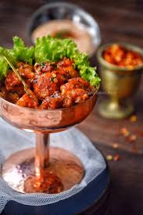
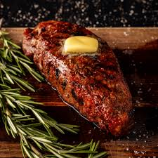
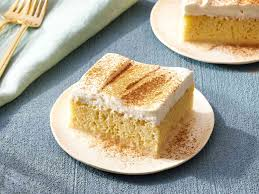
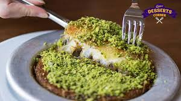

MENU
Welcome to aur restaurant ! choose your favorite dish from our menu below.
| APPETIZERS | |
|  | DYNAMITE CHICKEN Soft and tender chicken filled with extremely wonderful flavors and served with chilli honey sauce. Rs1,200 Order Now. |
 |
BUFFALO CHICKEN WINGS Buffalo wings are crispy chicken wings coated in spicy, tangy sauce. This recipe is a classic taste of American bar food made at home. Rs1,500 Order Now. |
| MAIN COURSE | |
|  | BEEF GRILLED STTEAK Start with a thick slab of beef— preferably the ribeye,Properly aged steaks tend to be more flavorful and tender. Rs2,500 Order Now |
 |
FETTUCINE ALFREDO PASTA Sauteed chicken breast, served in Alfredo sauce and topped with freshly chopped with seasoning. Tossed in fettuccine pasta. Rs2,000 Order Now |
| DESERT | |
|  | TRES LECHES MILK CAKE a rich decadent indian sweet which is easy to make and taste so delicious with simple tricks and techniques. Rs1,250 Order Now. |
|  | PISTACHIO CHEESE KUNAFA thin noodle-like pastry soaked in syrup and layered with cheese, nuts or pastes. Omniya Delicacy Pistachio Kunafa. Rs1,300 Order Now. |
Thank you for visiting!Enjoy your meal.
Visit our website.